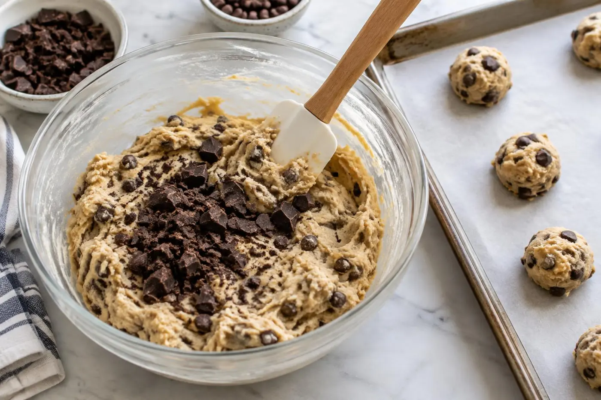

After many (delicious) test batches, this is our forever chocolate chip cookie. Melted butter and extra brown sugar give it the chewiness, and chopped chocolate instead of chips creates those irresistible melty pools.
No mixer, no chilling required, just one bowl and a spoon. Although if you can wait, an overnight rest in the fridge makes them even better.
Why you'll love it
One bowl, no mixer
Minimal dishes and maximum reward.
Chewy every time
Melted butter plus brown sugar is the secret.
Freezer-friendly dough
Bake fresh cookies whenever you want.
Ingredients
Tap an ingredient to check it off as you go.
Wet ingredients
Dry ingredients
Mix-ins
Cook mode keeps your screen awake while you cook.
Instructions
Tap a step number to mark it as done.
- 1
Preheat
Heat the oven to 350°F (175°C) and line two baking sheets with parchment paper.
- 2
Mix the wet ingredients
Whisk the melted butter with both sugars for about 1 minute, until smooth and glossy. Add the eggs and vanilla and whisk until lighter in color.
- 3
Add the dry ingredients
Add the flour, baking soda and salt. Stir with a spatula until just combined and no dry streaks remain, then fold in the chocolate.

Tip: Stop mixing as soon as the flour disappears. Overmixing makes cookies tough. - 4
Scoop
Scoop 2-tablespoon balls of dough onto the sheets, leaving 2 inches (5 cm) between them. For the best texture, chill the scooped dough for 30 minutes or up to 24 hours.
- 5
Bake
Bake one sheet at a time for 10–12 minutes, until the edges are golden but the centers still look slightly underdone.
- 6
Finish and cool
Sprinkle with flaky salt right away. Cool on the pan for 5 minutes, which lets the centers set, then move to a wire rack.
Tips for success
- Pull them out when they look a little underbaked. They keep cooking on the hot pan.
- For perfectly round cookies, swirl a large glass around each one right out of the oven.
- Mix dark and milk chocolate for a deeper flavor.
Make it your own
Variations
Storage & reheating
Keep baked cookies in an airtight container for up to 5 days. Freeze dough balls for up to 3 months and bake from frozen, adding 1–2 minutes.
Recipe FAQ
Why did my cookies spread too much?
The butter was probably too warm. Let it cool, or chill the dough for 30 minutes before baking.
Can I use chocolate chips?
Yes, but chopped chocolate melts into bigger, gooier pools.